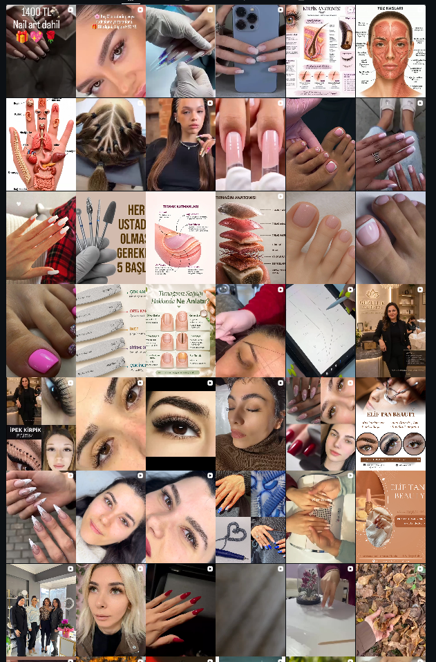
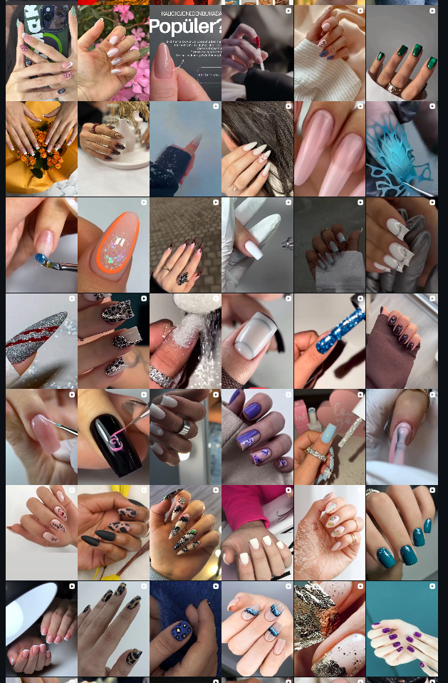
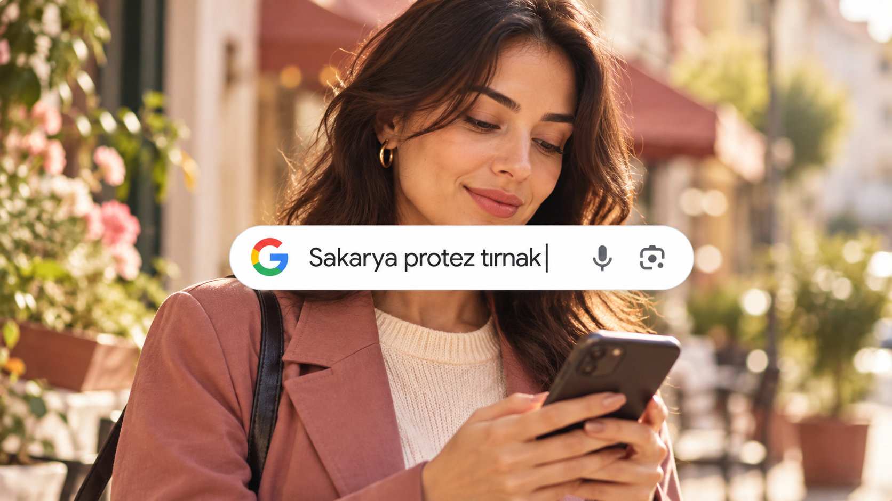
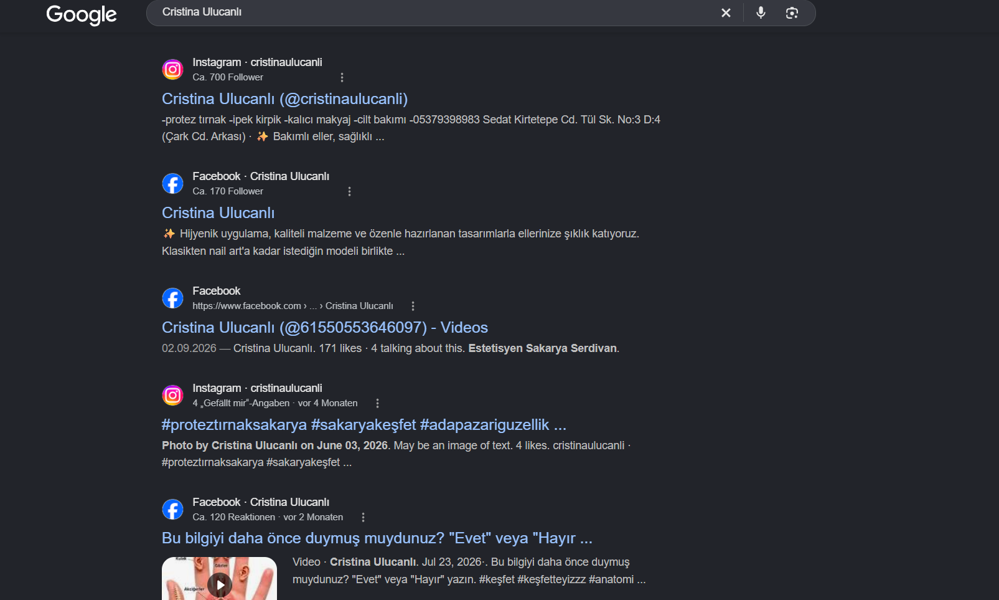
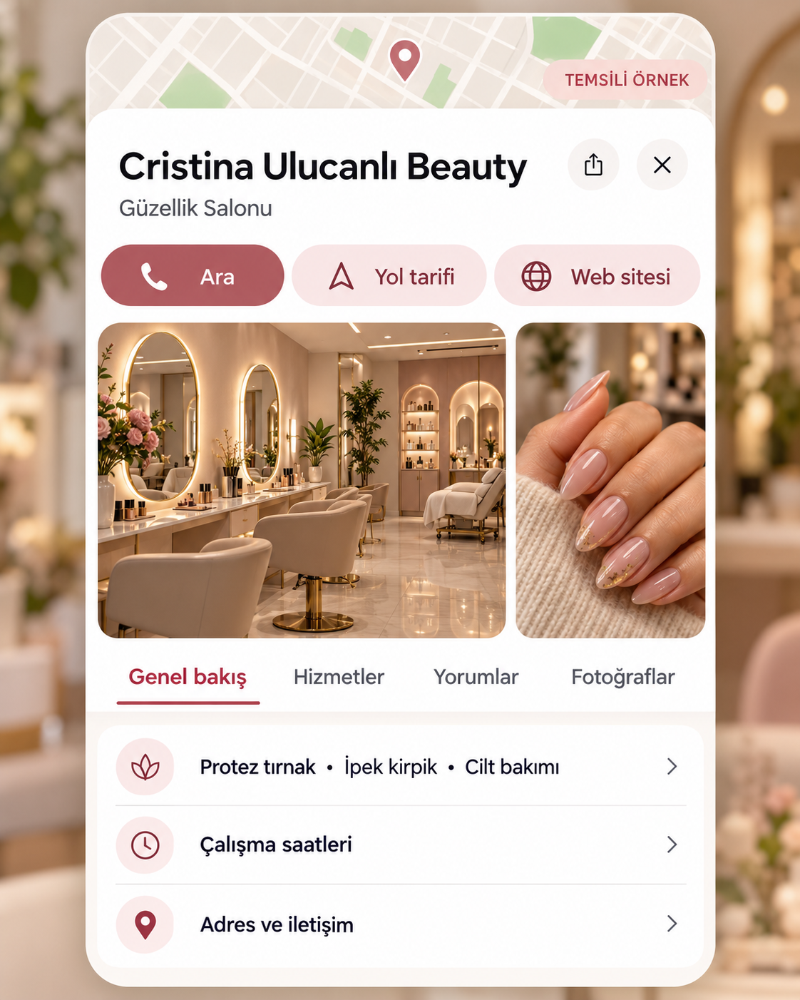
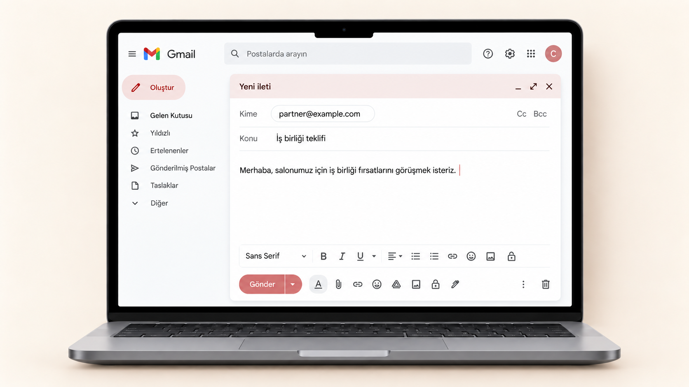

Tutarlı bir profil
Farklı kapak stillerini ortak bir tasarım diliyle birleştiren bio, öne çıkanlar ve gönderi düzeni.
SAKARYA / ADAPAZARI · SALONUNUZA ÖZEL
Cristina Ulucanlı Beauty için sosyal medya, yerel görünürlük ve randevu iletişimini birlikte geliştiren hizmet planı.


01 / ÖNCE İHTİYAÇLAR
Paylaştığınız hesap görüntülerinden yola çıkarak, salonun mevcut içeriklerini daha tutarlı ve kolay anlaşılır bir yapıya dönüştürmeyi öneriyoruz.
Farklı kapak stillerini ortak bir tasarım diliyle birleştiren bio, öne çıkanlar ve gönderi düzeni.
İşlem süreci, uzman anlatımı ve izinli sonuç görüntülerini düzenli bir içerik planında değerlendirme.
Hizmeti inceleyen kişinin salonla iletişime geçmesini ve doğru konuma ulaşmasını kolaylaştırma.
Gözlemler, paylaştığınız ekran görüntülerine dayanır. Hesap veya müşteri performansı hakkında doğrulanmış bir sonuç iddiası değildir.
INSTAGRAM / TASARIM ÖNERİSİ
Çubuğu kaydırarak mevcut paylaşımlarla önerilen kapak düzenini karşılaştırın.
“Sonra” bir tasarım önerisidir. Yayımlanmış bir profil veya yeni işlem sonucu değildir.
02 / İÇERİK PLANI
Üç pakette de aylık 14 Reel ve 6 destek paylaşımı. Aynı Reels Instagram, Facebook ve TikTok’ta; destek paylaşımları Instagram ve Facebook’ta yayınlanır.
SALONUN GERÇEK GÖRÜNTÜLERİ
İşlem süreci, hijyen, Cristina’nın anlatımı ve izinli önce/sonra görüntüleri. Konu ve açılış fikrinden kurgu ve yayına kadar hazırlanır.
Salonun günlük çalışma sırasında sağladığı fotoğraf ve videolara göre hazırlanır ve paylaşılır. Günlük hikâye çekimi hizmet kapsamına dahil değildir.
Konu, kısa akış, ilk saniyeler için açılış, görüntü seçimi, ritimli kesimler, Türkçe ekran metni, temel ses ve renk düzenleme.
Markaya uygun kapak ve açıklama, randevu çağrısı, konum ve etiketler. Aynı içerik platforma göre uyarlanır; her platform için ayrı adet üretilmez.
Reel başına önerilen kapsam: 15–60 saniye ve 1 toplu revizyon turu. Oranlar planlama hedefidir. AI, gerçek işlem sonucu yerine kullanılmaz.
03 / PAZARLAMA
Hizmet ve teklif planı, yerel hedefleme, farklı görsel ve metin testleri, talep takibi ve reklamların iyileştirilmesi.
Reklam bütçesini salon belirler ve karşılar. Bütçe, yönetim ücretinden ayrıdır.
Sakarya ve Adapazarı çevresinde uygun içerik üreticilerinin araştırılması, salon onayıyla iletişim, teklif ve yayın koordinasyonu.
Üretici ücretleri ve hediye hizmet maliyetleri ayrıdır. İş birliği sayısı bütçe ve anlaşmaya bağlıdır.
04 / GOOGLE MAPS & YEREL SEO
Hizmet arayan kişi salonu tanır, fotoğrafları ve yorumları inceler, ardından iletişim kurabilir veya yol tarifi alabilir.
Google Maps ve yorum yönetimi Paket 2 ve 3’e dahil
YEREL ARAMA
Doğru hizmet, kategori ve konum bilgileri, yakın çevrede hizmet arayan kişinin salonu değerlendirmesini kolaylaştırır.
Görseller temsili örnektir. Gerçek arama sonucu, salon fotoğrafı veya müşteri değerlendirmesi değildir. Sıralama garantisi verilmez.


Bu ekran, salonun Google Maps profili olmadığı anlamına gelmez. Mevcut profil başlangıçta kontrol edilir. “Sonra” gerçekleşmiş bir sonuç değildir.
05 / YÖNETİM PAKETLERİ
İçerik adedi aylık, yönetim ödemesi haftalıktır. Kartlardan birini seçerek tüm kapsamını inceleyebilirsiniz.
Salon görüntüleri sağlar.
Biz hazırlar ve yayınlarız.
4.000 TL / hafta
İçerik yönetimine ek olarak
günlük iletişim ve randevu takibi.
5.500 TL / hafta
Düzenli içerik için ihtiyaç kadar
çekim seansı ekleyelim.
4.000 TL / hafta
Mesaj / randevu ile 5.500 TL / hafta
+ ayrıca görüşülecek çekim bedeli
PAKET 03 / YÖNETİM VE ÇEKİM
Her çalışma haftası başlamadan önce alınır. İlk ödeme, anlaşma sonrası ve hizmet başlamadan önce yapılır. Reklam bütçesi ve ayrıca belirtilen dış maliyetler hizmet ücretinden ayrıdır.
DAHİL OLAN EK AVANTAJ
İş ortakları, tedarikçiler ve içerik üreticileriyle salonun alan adı üzerinden profesyonel yazışmalar.
Paket 2’ye ve Paket 3’ün mesaj / randevu dahil seçeneğine dahil.
Alan adı (domain) satın alma ve yenileme ücreti hariçtir.
Hizmet sona erdiğinde sonraki abonelik ücretini salon karşılar.

06 / BAĞIMSIZ HİZMETLER
Bu hizmetler yönetim paketlerine otomatik dahil değildir. Kapsam ve fiyat birlikte görüşülür.
Ziyaretçi hizmeti ve uygun saati seçer. Online rezervasyon otomatik kaydolur. Salon sahibi, telefon veya WhatsApp’tan gelen randevuları yönetim paneline ekler.
“Yeni randevu ekle” üzerinden müşteri, hizmet ve saat kaydedilir. Ortak takvim, dolu saatleri yeni rezervasyonlara kapatır. Çalışan, hizmet süresi ve saat yönetimi ihtiyaçlara göre belirlenir.
El ilanı, afiş ve kartlarla salonun çevresindeki uygun kitleye yönelik, net teklif ve iletişim çağrısı olan yerel bir kampanya.
Önerilen teslimler: 1 ana teklif, 1 el ilanı, 1 afiş, ihtiyaca göre 1 kart, 2 dijital uyarlama ve 2 toplu revizyon turu. Baskı, saha dağıtımı, iş ortağı ücretleri ve hediyeler ayrıdır. Yerinde uygulama ayrıca planlanır.
BİRLİKTE BAŞLANGIÇ
Salonun gerçek görüntülerini planlı içeriklere dönüştürürken, çevredeki kitleye basılı materyallerle de ulaşmayı öneriyoruz. Görüntüleri salon düzenli sağlayabiliyorsa Paket 1 veya 2 değerlendirilebilir.
Seçenekleri yeniden incele ↑